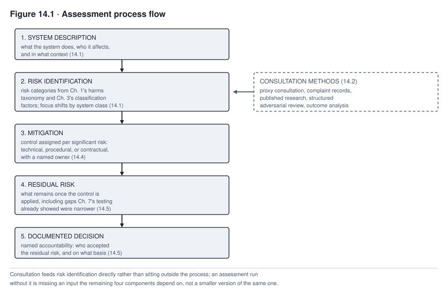
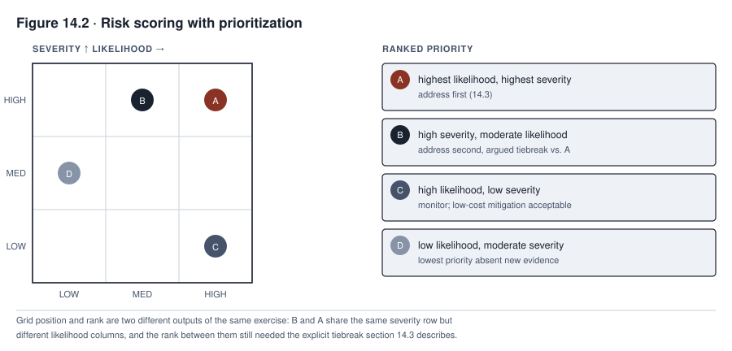

14. Risk Assessment and Management
Consider a constructed scenario that continues the running TALENTSCREEN case. Calloway Industries ran an impact assessment on TalentScreen when it first licensed the tool for hiring on its manufacturing floor. An impact assessment is a written review of how a system could harm the people it affects. On its own terms, Calloway’s assessment was competent. It named a risk called disparate impact. Under Title VII, the US law against workplace discrimination, a hiring practice such as screening applicants with this tool can cause disparate impact. That means the practice hurts one group more than another without a job-related reason. The assessment assigned a control, which is a safeguard meant to reduce a risk. It also documented who accepted the risk that remained. But no one on the assessment team thought to consult a single applicant the tool would screen.
Eighteen months later, Calloway extended the same tool to its logistics job family, a set of related jobs treated as one group. It did not redo any of that work. The logistics applicants were a different population. The assessment that would have caught this difference was never run. The first assessment had not failed. The second one never happened.
An impact assessment has to be more than a form filled out once and filed. The sections below cover the five components every assessment needs. They give real methods for hearing from affected people when those people cannot be reached at all. They set out how to score risk without pretending a number is more precise than the thinking behind it, and how an assessment turns into a real control rather than a paragraph that describes one. They name who must answer for the risk the control does not remove, and so explain and stand behind the decision. And they end with what has to happen before an organization can claim an assessment still describes the system it was written for.
What you will be able to do
- Build an impact assessment from its five components, ending in a documented decision with named accountability instead of an open-ended list of risks. Named accountability means one named person answers for the risk
- Use real methods to hear from stakeholders (the people a system affects) when standard interviews and workshops cannot reach them, and say honestly what each method stands in for and what it cannot recover
- Score and prioritize risk without false precision, which means without making a number look more exact than it is. Force the explicit tradeoff, the choice of what to fix first, that a claim of “everything is critical” is designed to avoid
- Choose controls by naming what each one does (prevention, deterrence, detection, containment, correction, recovery, or compensation) instead of using a bare reduce-or-detect label. That label says only whether a control reduces or detects a risk. Name the changes that should trigger reassessment before an organization discovers them the way Calloway did
14.1 The five components of an assessment
An impact assessment needs at least five components. An assessment that lacks one of them is missing something a reviewer will eventually ask for. Treat the five as a management spine, which is a basic structure for managing the work. The spine is not a complete, legally sufficient assessment on its own, meaning one that meets everything the law requires.
ISO/IEC 42005:2025 is the current international standard for AI system impact assessment, a published set of agreed rules from the standards bodies ISO and IEC. The standard was published in May 2025. It covers effects on individuals, groups, and society across the system lifecycle, which is the whole life of the system (checked 2026-09-13). The five components below are this chapter’s own minimum synthesis. They do not summarize that standard. An organization that wants to conform to ISO/IEC 42005 needs to read the standard itself, not this chapter.
Some laws require a specific type of assessment. Two examples are a data protection impact assessment under GDPR Article 35 and a fundamental-rights impact assessment under Article 27 of the EU AI Act. GDPR is the European Union’s data protection law, and the EU AI Act is the European Union’s law on artificial intelligence systems. A data protection impact assessment reviews the risks that data use creates for people. A fundamental-rights impact assessment reviews the risks to people’s basic rights.
Each legally required type adds its own required elements, and the spine does not supply them. They include necessity and proportionality, a test that asks whether the use is needed and in balance with its effects on people. They include named affected groups. They include human-oversight design, which is a plan for how people watch over the system and can step in. And they include a complaint mechanism, a way for affected people to raise a problem. In some cases they include a duty to consult a supervisory authority, the public body that enforces the law, before going ahead. So the first task of any assessment is to find out which legally required type, if any, applies. The team then adds that type’s requirements to the spine below. The spine alone is not enough.
System description comes first. It states what the system does, who it affects, and in what context. It must be specific enough that a reader unfamiliar with the deployment could still evaluate the risk analysis that follows.
Risk identification names the risks. It uses categories set out earlier, not a third scheme made up here. The first set is the harms taxonomy from Chapter 1, which is the book’s list of kinds of harm. The second set is the classification factors from Chapter 3. Those factors were used to place the system in a risk tier, a level of risk a system is sorted into, in the first place.
Mitigation, meaning the steps taken to reduce a risk, states the control assigned to each significant risk. Residual risk names what remains once the control is applied. A control rarely removes a risk completely. A documented decision, with named accountability, closes the assessment. Someone specific accepted the residual risk that remained, on a specific basis. That acceptance is recorded, not assumed.
Every class of AI system carries the full set of harms in the Chapter 1 taxonomy. These include privacy, security, safety, accessibility, intellectual property, and the rest. No class is exempt from any of them. Systems fall into three classes. Predictive systems estimate or score something, such as how likely an outcome is. Generative systems produce new content, such as text or images. Agentic systems take actions, such as using tools or software on their own.
The three classes differ in which risk category needs the sharpest extra attention in the risk identification component. That attention comes on top of the shared core. Predictive assessment emphasizes error and disparity, an uneven result across groups of people. It tracks false positive and false negative rates. A false positive is a case the system wrongly flags. A false negative is a case the system wrongly misses. The assessment also checks whether either rate falls unevenly across groups of people.
Generative assessment places that emphasis on content and misuse. It asks what a system might produce, make up, or be directed to produce outside its intended use. Agentic assessment places it on action and scope. It asks what the system can do, not only what it might say. It also asks how far the system’s granted permissions reach.
Suppose a team builds an assessment template for one class’s emphasis and applies it unchanged to another class. The template will underweight the other class’s sharpest risk in the risk identification component. This holds however well the other four components are carried out. The difference between the system classes is one of degree and of design timing. Design timing here means when and how often risk decisions come up as the system runs. It is not a difference of kind. Chapter 12 explains that a business or use owner operating an agent makes risk decisions at a pace that a predictive system’s periodic monitoring cycle does not match. For this reason, a template built for periodic review needs an agentic-specific overlay, which is an added layer of checks.
14.2 Engaging stakeholders whom standard methods cannot reach
Standard consultation methods assume a participant who can be identified and reached. The participant might be reached through an interview, a workshop, or a survey sent to a known group. For some of the people an impact assessment most needs to hear from, that assumption fails. It does not fail automatically, though.
Before looking for a substitute, the team does a documented reachability and safety analysis. The analysis asks whether the organization can build a safe, lawful channel to the affected group before it concludes that it cannot. It checks more than whether people can be found. It also checks whether they could take part without an unreasonable burden, meaning too much effort or cost. It checks for a language or accessibility barrier. And it checks for a realistic fear of retaliation, which is punishment for speaking up.
Some groups look hard to reach but can be reached through others. A union, an advisory panel, a civil-society organization, or an ombuds service may represent a group. A union speaks for workers. An advisory panel gives advice. A civil-society organization is a nonprofit or community group. An ombuds service handles complaints on behalf of a group. A group that one of these represents is not unreachable just because its members are spread out. A public notice, a purposive sample of people chosen because they fit the situation, or a worker representative can sometimes reach applicants that a one-to-one interview never could. A public notice is an announcement posted where affected people can see it.
TalentScreen’s applicants are a group for which this analysis can come back negative. They never interact with Calloway in a way that would let anyone interview them. Most do not know that a resume-screening tool evaluated them rather than a hiring manager. Calloway had no worker-representative or advisory channel through which applicants could be heard, and it used none. Where the analysis does come back negative, the honest response is a different method entirely. A more diligent version of the same method will not work. The recorded analysis is what separates a truly unreachable group from one the assessment team did not try hard enough to reach.
Direct and representative engagement comes first wherever the reachability analysis allows it. Worker representatives, unions, advisory panels, civil-society organizations, ombuds services, accessible public notices, and purposive recruitment can all bring an affected voice into the process. Sometimes they bring a trusted representative of that voice instead.
Where none of that is feasible, several further approaches exist. Each one stands in for engagement in a specific and limited way. None of them is engagement itself.
Proxy consultation works through an advocacy organization, a group whose job is to speak up for others’ interests. The organization speaks for the interests of the affected group, even without access to the specific people a given deployment touches. A worker advocacy group that knows hiring discrimination patterns can raise concerns that a screened applicant would raise. It can do this without ever locating that applicant.
Structured adversarial review gives one person the explicit job of arguing the affected party’s interest inside the assessment. That interest then has a voice inside the assessment even when the affected person is not there to speak. What it has is an assigned advocate’s best argument, not the affected party’s own voice. A properly run TalentScreen assessment would have used this approach. Calloway’s did not.
Three further sources are evidence, not engagement. They should be named that way. Published research on comparable systems and groups brings in what other organizations and researchers have already documented about how similar tools affect similar people. It substitutes general findings for this deployment’s specific population. Evidence from complaint and appeal records draws on what people said when a comparable system’s outcome affected them enough to prompt a formal objection. It captures real grievance, but only from the people who took the harder step of filing one. Outcome analysis after deployment looks at who was rejected, hired, or advanced once the system is running. It is evidence of a different kind again. It arrives only after the decision it might have informed has been made.
No method in this group solves the underlying problem, and none should be presented as if it did. That holds for the engagement substitutes and the evidence sources alike.
An assessment that uses every one of these methods still has not consulted the people it assesses risk to. To suggest otherwise would be false. What the methods do is put a documented, defensible effort in place of the silence that an unreachable group would otherwise leave in the assessment. The honest record of an assessment names three things. It names the reachability analysis performed. It names which methods were used as a result. And it names what each one could not recover. It does not present a substitute as equivalent to the engagement it stands in for.

Read Figure 14.1 as the five components in sequence. Consultation from section 14.2 feeds risk identification directly. It does not sit outside the process. The figure does not show everything, though. In practice, the same reachability analysis and engagement methods can also revise other parts. They can revise the system description, the risks identified, the mitigation chosen, and the conclusion about residual risk. They do more than give one input to risk identification. The figure also does not show the loop from a documented decision back to section 14.6’s reassessment triggers. A decision made here is not a hard stop. It can reopen the same assessment later.
Without engagement, the assessment lacks an input that several later steps depend on.
14.3 Risk scoring and prioritization
A risk score starts from two factors, likelihood and severity. Likelihood is how probable a harm is. Severity is how bad it would be. These two factors are only the starting pair. Many other factors can matter as much. These include exposure, scale, duration, and reversibility. They include how quickly a problem would be detected and the underlying uncertainty. They include which rights are affected and how harm is spread across a population. They also include the strength of controls already in place. Reversibility is whether a harm can be undone. In plain terms, these factors ask how many people a harm could touch, how big it could get, and how long it would last. They also ask which rights it would reach, and how sure the team is about its own answers.
A legal or rights-based red line is a limit that may not be crossed. A favorable score on some other factor cannot offset it.
The discipline that scoring requires is to resist the appearance of precision that numbers suggest. Take a risk labeled “likelihood 3, severity 4” on a five-point scale. That label is not a measurement. It is an estimate that people reached by thinking the risk through, and the number is only a label for that estimate. Multiplying the two numbers into a combined score is not a calculation that an ordinal scale supports. An ordinal scale puts items in order, and the gaps between its steps need not be equal. On such a scale, the step from one label to the next may be a bigger jump in real risk at the top than at the bottom. Multiplying the two labels treats those unequal steps as if they were equal. The calculation is supported only if that specific scale and operation have been validated for the purpose. So the resulting number works as a label for putting risks in order against each other. It is not a result of real arithmetic that can be trusted on its own.
The scale’s value is comparative, not absolute. It lets an assessment team rank one risk against another using a shared vocabulary. An assessment that reports a combined score has to report more. It must also give the reasoning behind each factor and the other considerations named above. Otherwise it has reported a number without the thinking that gives it meaning.
Prioritization is where scoring becomes useful. An organization has limited time and budget. A list of risks with no ranking gives it no way to decide what to address first. Forcing an explicit ranking surfaces a tradeoff that a flat list lets an organization avoid. If the highest-scored risk is addressed first, a lower-scored one waits. Naming that choice, with the reasons for it, is more honest than treating every identified risk as equally urgent. Treating every risk as equally urgent means that none receives the priority its own score says it deserves.
The hardest moment in scoring comes when a stakeholder group insists that every risk on the list is critical. This response is common. It deserves a direct answer, not a delay. The right answer is not always the same, though.
Some risks resist a single total ranking, for three reasons. First, a risk that a law or policy makes categorically unacceptable does not wait in line behind a risk that is only high-scored. Categorically unacceptable means never allowed, whatever its score. Second, two risks that touch different kinds of harm, such as a safety risk and a rights risk, can be incomparable instead of falsely tied. Incomparable means there is no fair way to rank one above the other. Third, risks that are jointly urgent or tightly dependent on each other may need to be addressed together instead of in a forced sequence. Tightly dependent means that fixing one depends on fixing the other. Ranking every risk into one ordered list in these cases would create the same false precision as a bare numeric score.
Once those cases are set aside, a claim that everything left is equally critical is a refusal to prioritize. It is not a risk assessment. Comparing what is left is the work that scoring exists to do. For that remaining set, the team does not overrule the stakeholder. It requires the comparison directly. It asks a forced-choice question. If only one of risk A and risk B could be addressed first, which one would it be, and why?
Suppose a stakeholder cannot answer that question for two risks that are not legally prohibited, not incomparable across harm types, and not truly tied. Then the stakeholder has not assessed them as equally severe. The stakeholder has declined to do the comparative work that scoring requires. The assessment process should surface that refusal. It should not accept an unranked list as though ranking had occurred.
Ranking also answers a narrower question than it can sound like. It orders remediation work, which is the work of fixing risks. It does not decide whether deployment is acceptable. A risk can cross a non-deployment threshold, a line past which the system must not be put into use. That happens when the risk is legally prohibited or exceeds the organization’s own stated risk tolerance, how much risk it has said it will accept. Such a risk does not wait its turn in the line of fixes. It blocks deployment, wherever it lands in the ranked order. A system can carry several such risks at once. Each one must be resolved before deployment, and none of them gets a place in a single priority line.

Read Figure 14.2 by comparing its two outputs, not by grid position alone. The grid on the left plots four named risks by likelihood and severity. The ranked list on the right orders those risks for remediation. Position on the grid and place in the ranked order are still not the same information. Two of the plotted risks, labeled A and B here, share a severity row but sit in different likelihood columns. Even so, the rank between them still needed an explicit, argued tiebreak, a stated reason for putting one ahead of the other. The figure does not show which risks a legal or policy prohibition excludes outright. That test is applied separately, before any risk reaches the grid or the list.
14.4 Mitigation planning and control selection
Mitigation is where an assessment becomes action. Without it, the assessment remains a description of risk that nothing addresses. Mitigation is the step most often skipped in practice. Identifying and scoring risk feels like the substantive work. Assigning and verifying a control feels like an afterthought.
The first mitigation decision is which treatment to pursue, before any control is chosen. A team has several treatments to choose from. It can avoid the use entirely. It can redesign the system or narrow its scope. It can reduce the risk with a control. It can share or transfer part of the exposure, which means passing part of the risk to another party. It can accept the risk, that is, decide to carry it knowingly, within delegated authority, which is authority formally handed to the person deciding. For a system already deployed, it can retire the system. Adding a control to an otherwise unchanged design is one option among these. It is not the default. The mitigation component should record which option was chosen and why before it describes the control.
For each significant risk addressed by a control, the mitigation component then states what the control does. It states whether the control is technical and built into the system, procedural and followed by people, or contractual and written into an agreement. The component also states who owns operating the control. And it states how the control’s effectiveness will be verified. Effectiveness should not be assumed just because the control was assigned.
Organizations routinely collapse an important distinction. They use one word for everything a control does. A control should be named for what it does. A control can prevent an event from happening at all. It can deter the event by raising its cost. It can detect the event after it has occurred. It can contain the event before it spreads further. It can correct or recover from the event once it is detected. Or it can compensate for harm that the control could not prevent. One control can do more than one of these, depending on how it is implemented.
Chapters 11 and 12 name the same set of effects (reduce likelihood, detect, contain, intervene, correct, recover, verify) for generative and agentic risk specifically. The same vocabulary of named effects applies here, in place of a bare reduce-or-detect label invented for this one topic.
Consider a monitoring dashboard that flags disparate outcomes. It detects a disparity that has already occurred, which is valuable. But detection alone does not make the disparity any less likely to happen. That changes only if the dashboard is connected to a containment or correction step that acts on what it finds. A claim that a control reduces a risk, and does more than detect or contain it, needs evidence before it is recorded that way.
Retraining a model on a more representative population, one that better matches the people the system affects, may reduce a disparity risk. The risk goes down only if evaluation, meaning testing, against the affected population shows the improvement. Labels, objectives, sampling, features, thresholds, and the deployment context can all preserve or worsen a disparity despite a more representative training set.
An organization may assign a detecting or partially effective control and record it as though the underlying risk had been fully reduced. If it has no evaluation evidence, it has documented a false sense of the system’s real exposure.
Every proposed control needs a feasibility test before it is recorded as the assessment’s answer. Feasibility includes the cost constraint that Chapter 17 develops in full. A control that nobody can afford to operate at the volume and pace the deployment requires will lapse in practice. It lapses quietly, while the documentation continues to describe it as active. An assessment that names an infeasible control has produced paperwork, not mitigation.
The mitigation component should therefore force a second question. The first question is whether a control addresses the risk in principle. The second is whether the organization will run it at the scale the deployment demands. A control that fails the second test needs to be replaced before the assessment is considered complete. It should not be flagged as a future improvement while the risk it was meant to address stays unaddressed.
A replacement may not be available. If no feasible control brings the risk within tolerance, the honest outcome is one of four. The team can redesign the system, narrow its scope, delay deployment, or reject the proposed use. The assessment must not record an infeasible control as though feasibility were someone else’s problem to solve later.
14.5 Residual risk acceptance
Residual risk is what remains once a control is applied. Nearly every control leaves some, because complete elimination of a risk is rare. An assessment that claims complete elimination should be read with skepticism.
The residual risk acceptance component asks three questions, and the assessment must answer all three explicitly. Who accepts the risk that remains? On what basis? How is that acceptance documented?
The “who” is not free-floating. Chapter 13 sets out a three-lines structure, a way of splitting risk duties across three groups. In it, the first line is the business or use owner, and the second line is an oversight function. The business or use owner accountable for the underlying decision holds first-line acceptance authority for risk within its delegated tolerance, the amount it is authorized to accept. If the second line must agree, that agreement is a control on the acceptance. The second line does not become the acceptor.
Residual risk above a stated tolerance escalates to a higher authority. That authority may be an executive, a governance body, or the board, whichever one the organization’s own delegation, its formal handing out of authority, assigns. The person running the assessment does not accept it just because they happen to be running the assessment. Some residual risk cannot be lawfully accepted at all, no matter who signs, because the law does not allow anyone to accept it. An assessment that treats acceptance as always available skips a question that comes first. That question is whether the remaining exposure is lawful to carry, meaning whether the law allows the organization to keep running with it.
A properly authorized acceptance is a record, not only a signature. It records the stated basis and any conditions attached. It records the monitoring that checks those conditions hold. It records an expiry or review date, by which the acceptance must be revisited instead of assumed to run forever. An assessment may identify residual risk but record no named, properly authorized acceptance that meets this standard. Then that risk is unaccepted. In practice, this is an acceptance that nobody made and nobody can be held to.
A control sometimes verifies something narrower than the requirement it was meant to serve. In other words, there is a gap between what a test checks and what the requirement demanded. That gap does not disappear once testing ends. It belongs in the residual risk component and should be named there as residual risk. It should not be left as an unstated gap between what the requirement says and what the control covers. Suppose Chapter 7’s testing already showed that the control checks less than the requirement asks. An assessment that carries the control forward as though it fully satisfied the requirement has claimed a completeness that the underlying work does not support.
Unaccepted residual risk is a risk with no recorded decision. It is not yet a settled legal liability, which is a legal responsibility for harm that has already been established. The distinction still matters, even though the practical stakes are similar either way. A risk with no accountable acceptor is not a risk the organization has decided to bear. The organization has not gotten around to deciding about it.
An incident that later makes the risk real will first raise the question of who accepted it. The absence of an answer tends to look like the liability the assessment never formally established. An assessment with no answer to that question has failed at the one component every other component exists to support.
14.6 Reassessment triggers
An assessment is not a one-time document. Treating it as one is the failure that let Calloway extend TalentScreen to a second job family without redoing any work. Calloway’s first assessment had been done correctly for a different population.
Reassessment triggers name in advance which changes require the assessment to be redone. They stop an organization from assuming that a system approved once stays adequately assessed forever. The list is organized by what changed. It is not treated as seven interchangeable items.
Model and data triggers cover a material change to the model or version deployed. They cover a change to training or fine-tuning data or its labels. For a generative system, they also cover a changed prompt, retrieval corpus, or grounding source. Fine-tuning is extra training that adapts a model to a task. A prompt is the instruction given to a model. A retrieval corpus is the body of documents the system looks things up in. A grounding source is a source the system’s answers are tied to. Chapter 11 shows that a prompt change can materially change observed behavior without touching the model’s weights. Weights are the numbers inside a model that training sets.
Use and population triggers cover an extension to a new population or use case that the original assessment never covered. That was Calloway’s own gap. They also cover a shift in the makeup of the affected population, even without a formal decision to extend the system.
Agentic-specific triggers fire on a change to an agent’s granted permissions, tool access, or action scope. An agent’s action scope is the range of actions it is allowed to take, and its permission scope is what it is allowed to reach. Chapter 12 explains that permission scope is itself a design choice that carries risk. It is not a one-time setting.
Dependency triggers apply to any system class, not only agentic systems. A dependency is something the system relies on. A vendor is a company that sells or licenses a tool. A change to a vendor, a purchased model, an API, a subagent, or an orchestration configuration can shift the system’s risk. This is true whether the system is predictive, generative, or agentic. An API is a connection that lets one piece of software use another. A subagent is a smaller agent that a larger agent calls on. An orchestration configuration sets how the parts of a system work together.
Evidence and performance triggers cover several events. One is a control that failed. Another is a monitored performance or harm threshold that was crossed. A third is a near miss, which did not cross a threshold but showed that one was closer than assumed. These triggers also cover a complaint or appeal. They cover new evidence bearing on a risk the assessment already named, whether it comes from research, an audit, or a comparable incident elsewhere. And they cover a failure in the evidence itself.
An evidence failure can take three forms. A traceability matrix entry may be marked as met, meaning recorded as satisfied, without adequate support. A traceability matrix links each requirement to the evidence that it is met. A retention period may have lapsed, so the records were already gone by the time anyone needed to check a claim against them. A retention period is how long records are kept. Or a logging gap may leave a risk the assessment relied on unable to be checked at all. A risk decision that rests on unverified or since-invalidated evidence is no more sound than one that rests on a stale model (Chapter 15). A stale model is one that is out of date.
Context triggers address a change in the applicable law, standard, or regulator expectation that affects the system’s duties or risk. This applies whether or not the change moves the system’s classification tier under Chapter 3’s factors. Context triggers also cover a material change to the organization’s own structure or workflow around the system. And they cover a security threat that has become newly relevant to the system’s operation.
Elapsed time is the last and most general trigger. A fixed calendar interval does not by itself demand a full assessment. But a population, a regulatory environment, and a model’s real-world performance can all drift, which means change slowly. They can drift with no single event marking the moment. So elapsed time calls for a risk-based review interval, shorter for higher-tier systems. It does not call for an undifferentiated full rerun on a fixed schedule for every system alike.
An incident trigger needs its own caution. It is tempting to reassess only the component the incident exposed. Chapter 10 explains that a lookback and root-cause analysis can reveal a shared cause that reaches beyond the single system where the incident surfaced. A lookback is a review of earlier events. A root-cause analysis traces a problem back to the underlying reason it happened. A reassessment that stops at the exposed component can miss the adjacent-system and portfolio-level exposure that the incident was evidence of. Adjacent systems are other systems that share parts or causes with the one where the incident happened. Portfolio-level means across all of the organization’s systems.
Without triggers defined in advance, assessments go out of date with no event to mark it. Suppose an organization governs a system under a year-old assessment. That assessment no longer describes the system’s actual population, regulatory exposure, or performance. The organization does not enjoy a lighter compliance burden. It is governing a system that its own assessment no longer describes.
Calloway’s extension to the logistics job family was a case of this kind. It reached a new population that TalentScreen’s original fairness testing had never covered. Fairness testing checks whether a tool treats different groups fairly. What let the extension proceed on an assessment written for a different population entirely was the absence of a defined trigger, not any single person’s oversight.
Table 14.1 groups these triggers by what changed. It names the immediate action each family calls for. It also states the reassessment scope. Triage means sorting problems so the most urgent is handled first. A validity review is a check of whether the assessment still holds true. Blast radius means how far an action or failure could reach. A bare list of trigger names does not tell a team what to do when one fires.
| Trigger family | Examples | Immediate action | Reassessment scope |
|---|---|---|---|
| Model and data | Model or version change; training or fine-tuning data or label change; for a generative system, a changed prompt, retrieval corpus, or grounding source | Pause the affected change pending review if the system is already live | The changed component plus any downstream effect on risk already identified |
| Use and population | Extension to a new population or use case; a shift in the affected-population distribution without a formal extension decision | Confirm the new scope and who authorized it | System description, risk identification, and mitigation, since a different population can change all three |
| Agentic-specific | Change to an agent’s granted permissions, tool access, or action scope | Confirm the change against the permission-scope standard Chapter 12 requires | The action-scope and blast-radius analysis specifically |
| Dependency (any system class) | Vendor, purchased model, API, subagent, or orchestration configuration change | Verify the controls the assessment relied on are still actually in place | The dependency’s role in every risk that assumed its prior behavior |
| Evidence and performance | Control failure; a crossed performance or harm threshold; a near miss; a complaint or appeal; new external evidence; an evidence failure such as an unverified traceability entry, a lapsed retention period, or a logging gap | Triage and contain where a threshold has already been crossed; where the trigger is an evidence failure, treat the underlying risk as unverified until the evidence is restored | The specific risk and control the evidence bears on |
| Context | Change in applicable law, standard, or regulator expectation, whether or not it moves the Chapter 3 classification tier; organizational or workflow change; a newly relevant security threat | Route to legal or governance review as applicable | Classification, duties, and any control the changed context affects |
| Elapsed time | A risk-based review interval is reached, shorter for higher-tier systems, not a fixed cycle uniform across every system | Run a documented validity review | Targeted or full, decided by the validity review’s own findings rather than assumed in advance |
Table 14.1. Reassessment triggers grouped by what changed, using the same families as section 14.6. The grouping is this book’s own synthesis. It is not a validated or universally observed set. After an incident that exposes one component, the default is the lookback across adjacent systems described in section 14.6. The default is not to reassess only the exposed row. “Nothing visibly changed” does not mean “no trigger fired.” The elapsed-time and use-and-population rows can both fire with no single distinct event marking them. Read the table against the TalentScreen case. Calloway’s extension satisfied the use-and-population row. No discrete failure had to occur first for that trigger to fire.
Case in focus: the assessment that was never run twice
TALENTSCREEN · Hypothetical, following the running cases
This continuing fictional scenario illustrates the reassessment-trigger failure that section 14.6 describes. It does not report an event that happened at any real organization. Every fact below is invented for teaching purposes, including the contract term, the audit cadence, and the complaint. The audit cadence is how often audits happen.
Calloway’s first impact assessment for TalentScreen was written when the tool was licensed for manufacturing floor hiring. It followed the five-component structure described above. Measured against its own scope, it was competent work. It named the disparate-impact risk squarely. It assigned a bias-audit control, which this hypothetical’s vendor contract specified on an annual cadence. A bias audit is an independent check of whether a tool’s results differ unfairly across groups. The assessment also documented residual risk acceptance from the head of talent acquisition. The head of talent acquisition accepted the risk that the annual cadence left a gap between audits, during which drift could go undetected.
The consultation methods described in section 14.2 were not part of Calloway’s assessment practice at the time. As a result, the assessment made no structured attempt to hear from the applicants the tool screened. It did not even include a documented analysis of whether a channel to them was possible. There was no proxy consultation with an advocacy organization. No one was assigned the job of arguing an applicant’s interest in a structured adversarial review. The assessment reasoned entirely from the vendor’s own audit data and Calloway’s internal hiring statistics. No channel existed through which an affected applicant’s perspective could enter the process, even in the limited, substitute form described above.
Eighteen months after the manufacturing floor deployment, Calloway’s logistics division adopted TalentScreen for its own hiring. No new assessment was opened. The reasoning, reconstructed after the fact, was that the tool itself had not changed. That reasoning missed the use-and-population trigger that section 14.6 names. An extension to a new population is a reassessment trigger whether or not the underlying model changed at all. The reason is that the fairness testing in the original assessment characterized the manufacturing applicant population, not the logistics one. A stable model does not guarantee stable performance across a population that the original testing never included.
The gap surfaced only when a complaint under the logistics deployment prompted an internal review. A complaint is one of the evidence sources section 14.2 names, and here it arrived after deployment, not before. The review found a disparity in the logistics population. The manufacturing-floor bias audit had never been positioned to catch it, because that audit covered a different population entirely.
No one at Calloway made an explicit decision to skip reassessment. The organization had no defined trigger that would have forced the question. So the absence of a redone assessment was not a decision that anyone made and could be held to. It was the default outcome of not having asked.
A real, documented analogue to the audit duty that Calloway’s fictional vendor contract invents is New York City’s Local Law 144. Local Law 144 requires an employer or employment agency that uses a covered automated employment decision tool to do three things. The employer must obtain an independent bias audit within the year before use. It must publish a summary of the results. And it must give candidates and employees notice of the tool’s use. A tool of this kind is called an AEDT, short for automated employment decision tool. The employer, not the vendor, remains responsible for compliance (checked 2026-09-12).
The comparison is instructive where it differs from Calloway’s hypothetical. Local Law 144’s duty runs to the deploying employer by law. In Calloway’s case, the duty came from a clause in the hypothetical’s vendor contract.
A Title VII disparate-impact analysis is a separate legal question. It asks whether a facially neutral practice causes a disparate effect without job-related justification. A facially neutral practice is one that looks neutral on its face. The audit result alone does not resolve that question one way or the other.
The four-fifths rule, which some bias audits report against, is a rule-of-thumb administrative benchmark. The rule compares each group’s selection rate with the highest group’s rate. Four-fifths means 80 percent, so the rule flags a group whose selection rate falls below that share of the highest group’s rate. The EEOC’s own Uniform Guidelines describe it as an aid to enforcement, not a legal definition of disparate impact. The EEOC is the US Equal Employment Opportunity Commission, the federal agency that enforces employment discrimination law. Passing the four-fifths rule does not by itself establish that a practice is lawful.
A governance program should treat the Calloway scenario as a teaching device for the reassessment-trigger failure. It should treat a real regulator’s published requirements, cited above, as the minimum the law requires for a covered deployment in that jurisdiction.
A correctly completed audit still leaves several things undone. A bias-audit result does not by itself validate that the screened criteria are job-related. It does not provide a required accommodation, which is an adjustment that removes a barrier so a person can take part. It does not satisfy Local Law 144’s separate notice requirement. The law does not create a general right to appeal an AEDT result. Any recourse channel beyond notice comes from another law, a policy, or the organization’s own governance design. Recourse means a way to challenge a result. The audit result also does not monitor human overrides. A human reviewer may override the tool’s recommendation in a way that brings back the same disparity the audit measured. A control this narrow needs the fuller acceptable-use and monitoring controls that Chapter 13 develops. Acceptable-use controls are rules about how a tool may and may not be used. It should not be treated as a complete fairness program on its own.
Summary
An impact assessment needs five components at minimum. They form a management spine, not a complete, legally sufficient assessment. The five are system description, risk identification, mitigation, residual risk, and a documented decision with named accountability. Risk identification draws on Chapter 1’s harms taxonomy and Chapter 3’s classification factors. Assessment focus then shifts by system class. Predictive systems center on error and disparity. Generative systems center on content and misuse. Agentic systems center on action and scope. A legally required assessment type adds its own required elements on top of the spine.
Some stakeholders cannot be reached by standard methods. This is a real methodological gap, not a solved problem. A documented reachability and safety analysis comes first. Direct and representative engagement comes next where that analysis allows it, through worker representatives, advisory panels, and civil-society organizations. Proxy consultation, structured adversarial review, published research, complaint records, and post-deployment outcome analysis stand in for engagement. They do so in a specific and limited way, and only where real engagement is not feasible.
Risk scoring combines likelihood and severity as a structured comparative estimate, not a precise measurement. Prioritization forces the explicit tradeoff that a claim of “everything is critical” is designed to avoid. That holds once legally prohibited and truly incomparable risks are set aside. A marked red line separates risks that no score can make acceptable from risks that scoring can compare.
Mitigation turns assessment into action. Every significant risk gets a named control, an owner, and a verification method. Each control is named for its mechanism, which is prevent, deter, detect, contain, correct, recover, or compensate. A bare reduce-or-detect label is not enough. A claimed risk reduction rests on evaluation evidence, not assumption. Every control is also tested against the feasibility that a real operating budget imposes.
Residual risk acceptance requires a named, properly authorized acceptor and a documented basis. The first line accepts risk within delegated tolerance. Risk above that tolerance is escalated, following the roles in Chapter 13. Unaccepted residual risk is a risk that nobody has decided to bear.
Reassessment triggers cover several kinds of change. They are model and data changes, use and population changes, agentic-specific changes to permissions and tools, and dependency changes that affect any system class. They also include evidence and performance changes, legal and organizational context changes, and a risk-based elapsed-time review. An incident trigger defaults to a lookback across adjacent systems, not only the exposed component. Without triggers, an assessment goes out of date with nothing to mark it. It governs a system that has already changed out from under it.
Review questions
COMPREHENSION
Name the five components of an impact assessment and explain what is missing from an assessment that identifies risk and assigns controls but records no named acceptance of residual risk.
Explain why assessment focus differs across predictive, generative, and agentic systems, and give the specific risk category each class centers on.
APPLIED
A workshop stakeholder insists that every risk on an assessment’s list is equally critical. Describe the specific question this chapter would put back to that stakeholder, name one category of risk where that question would not apply, and explain why the question still forces a comparison for everything outside that category.
For a proposed control, describe how to name its actual mechanism, prevent, deter, detect, contain, correct, recover, or compensate, rather than defaulting to a reduce-or-detect binary, and explain what evidence a claim that the control reduces a risk needs before it can be recorded that way.
SPOT THE RISK
- An organization extends a purchased screening tool to a new population without opening a new assessment, reasoning that the tool itself has not changed. Identify the reassessment trigger this reasoning misses and explain why “the tool did not change” does not answer it.
COMPARE AND DECIDE
- Compare proxy consultation through an advocacy organization against post-deployment outcome analysis as methods for accounting for an unreachable stakeholder population, and state what each recovers that the other does not.
RUNNING CASE
TALENTSCREENUsing the case in focus, explain why Calloway’s first assessment could be competent on its own terms while still leaving the organization exposed, and identify the specific trigger that should have forced a second assessment before the logistics deployment proceeded.
An assessment is only as good as the record it leaves behind. A control, a residual risk decision, and a reassessment trigger all depend on documentation specific enough to be tested, not just asserted. The assessment process hands the next stage of work a specific set of artifacts, the documents and records it produces, not a general impression that an assessment happened.
The first artifact is the scoped system record, which describes the system and its limits. The second is the engagement record. It names the reachability analysis performed and what it recovered. The third is the risk register, with its uncertainty and red-line determinations. The register is the list of identified risks. The fourth is the set of control specifications and their test evidence. The fifth is the residual-risk acceptance, with its authority, conditions, and expiry. The sixth is the monitoring plan, which says how the system will be watched over time. The seventh is the set of reassessment triggers for this specific system. The last is the complaint and recourse channel that affected people can use.
The next chapter turns to the documentation discipline that makes each of those artifacts specific enough to survive an audit instead of being only claimed. It also takes up a harder problem that agentic systems pose. The log of such a system, which is its record of events, must reconstruct not just what happened but under whose authority.